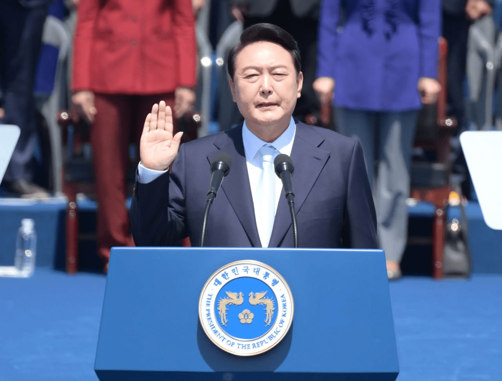

윤석열 정부는 2022년 3월 9일 제20대 대통령 선거에서 당선된 윤석열 대통령이 이끄는 대한민국의 정부이다.
제6공화국 출범 이후 5번째로 대한민국 보수정당이 창출한 정부로서 자유를 자주 언급하고, 자유로운 시장경제, 친미와 강력한 한미동맹, 힘에 의한 평화 등 전형적인 보수주의의 방향을 추구한다. 다만 강경한 대북정책을 고수한 기존의 보수정부와는 달리 실용적인 대북정책을 추구하는 등 중도실용주의적인 면모를 보이고 있다. 또한 문재인 정부에서 시행했던 영호남 지역 안배,여성 장관 30% 할당제 등을 폐기하고, 남녀, 지역 상관 없이 최고 실력의 인재를 적재적소에 배치하겠다는 능력주의 인사 원칙을 내세웠다. 한편 한국정당학회와 중앙일보에서는 윤석열을 안철수보다도 덜 보수적인 중도주의(5.12)로 평가했다.